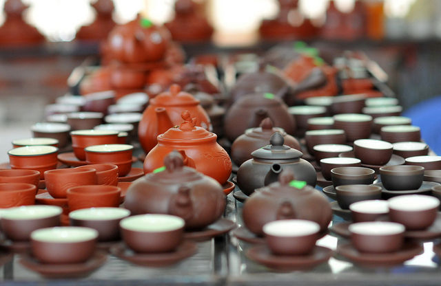

Hanoi city
Undergoing 1,000 years, witnessing all ups and downs of Vietnam history, Hanoi – a dynamic capital of Vietnam is one of the “most-wanted” destinations which keeps inside many of the historic and cultural vestiges for every foreign tourist who have chance to travel to Vietnam. It is also a pride of Vietnamese people in general and Hanoians in particular.

Hanoi is the perfect foil for the seething mass of humanity that is Ho Chi Minh City. With a population of seven million and a more genteel style than its southern counterpart, Hanoi is the cultural capital of Vietnam and its heart and soul.
Previously known as Thang Long, it was renamed Hanoi in 1831 at a time when Hue was the capital. Large areas of present-day Hanoi were built during the French occupation, reflected in its broad boulevards and French-inspired architecture, which give the city a definite charm.
Hanoi is a great place to explore on foot. There is a lot to see and do here. Vietnam’s capital lies on the banks of the Red River, some 100 kilometres from its mouth. Human settlements here date back as far as the 3rd century BC.

Nowadays Hanoi is a mix of busy modern life and sustainable values preserved for generations. Despite the noise of seven million residents zipping around on motorbikes, Hanoi still has an intimate urban feel. Living in Hanoi you will discover a city where the modern and ancient merge. Whether you wish to sip coffee by one of its 100 lakes, delve into fascinating history, or explore mega-malls and entertainment complexes, Hanoi really does have something to interest everyone.